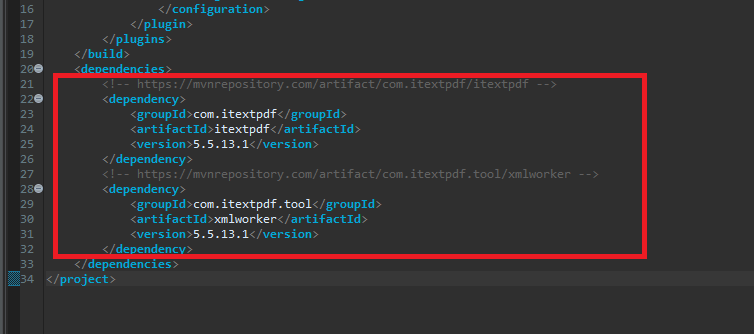
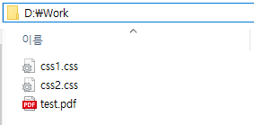
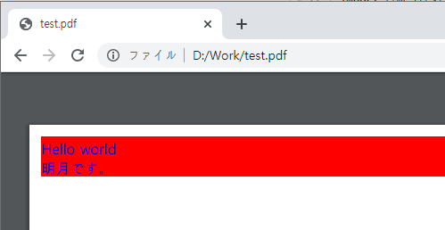

[Java] PDFを出力する方法(itextpdf)
こんにちは。明月です。
この投稿はJavaでPDFを出力する方法(itextpdf)に関する説明です。
ウェブサービスで、特にポータルサービスならデータの結果を出力するところならPDF出力が多いです。最近はほとんどPDFの出力なら標準でなっているほど多いです。
PDFで出力したら修正もできないし、イメージよりドキュメント形式になっているフォーマットになっているのでです。
これをJava環境でPDFを作成して出力して使う方法に関して説明します。
Java環境で使うためにMavenレポジトリを通ってitextpdf」と「xmlworker」をしなければならないです。
repository - https://mvnrepository.com/artifact/com.itextpdf/itextpdf/5.5.13.1
repository - https://mvnrepository.com/artifact/com.itextpdf.tool/xmlworker/5.5.13.1
<!-- https://mvnrepository.com/artifact/com.itextpdf/itextpdf -->
<dependency>
<groupId>com.itextpdf</groupId>
<artifactId>itextpdf</artifactId>
<version>5.5.13.1</version>
</dependency>
<!-- https://mvnrepository.com/artifact/com.itextpdf.tool/xmlworker -->
<dependency>
<groupId>com.itextpdf.tool</groupId>
<artifactId>xmlworker</artifactId>
<version>5.5.13.1</version>
</dependency>

簡単なPDFを出力するプログラムを作成しましょう。コンソールで実行するとPDFが生成するプログラムです。
import java.io.FileInputStream;
import java.io.FileOutputStream;
import java.io.StringReader;
import java.net.URL;
import java.nio.charset.Charset;
import com.itextpdf.text.Document;
import com.itextpdf.text.PageSize;
import com.itextpdf.text.pdf.PdfWriter;
import com.itextpdf.tool.xml.XMLWorker;
import com.itextpdf.tool.xml.XMLWorkerFontProvider;
import com.itextpdf.tool.xml.XMLWorkerHelper;
import com.itextpdf.tool.xml.css.StyleAttrCSSResolver;
import com.itextpdf.tool.xml.html.CssAppliersImpl;
import com.itextpdf.tool.xml.html.Tags;
import com.itextpdf.tool.xml.parser.XMLParser;
import com.itextpdf.tool.xml.pipeline.css.CssResolverPipeline;
import com.itextpdf.tool.xml.pipeline.end.PdfWriterPipeline;
import com.itextpdf.tool.xml.pipeline.html.HtmlPipeline;
import com.itextpdf.tool.xml.pipeline.html.HtmlPipelineContext;
public class Main {
// 実行関数
public static void main(String[] args) {
// PDFを作成するHTML
String html = "<html>" +
"<head></head>" +
"<body>" +
"<div>Hello world</div>" +
"<div>明月です。</div>" +
"</body>" +
"</html>";
// ファイルIOを取得する。
// 出力パスは"d:\\work\\test.pdf"
try (FileOutputStream os = new FileOutputStream("d:\\work\\test.pdf")) {
// Pdfタイプのdocumentを生成する。
Document document = new Document(PageSize.A4, 10, 10, 10, 10);
// PdfWriterを取得する。
PdfWriter writer = PdfWriter.getInstance(document, os);
// documentオブジェクトをopenする。
document.open();
// css設定するインスタンス
StyleAttrCSSResolver cssResolver = new StyleAttrCSSResolver();
// Cssファイルを設定する。(ｃｓｓ1.cssファイルをインポートする。)
try (FileInputStream cssStream = new FileInputStream("d:\\work\\css1.css")) {
cssResolver.addCss(XMLWorkerHelper.getCSS(cssStream));
}
// Cssファイルを設定する。(ｃｓｓ2.cssファイルをインポートする。)
try (FileInputStream cssStream = new FileInputStream("d:\\work\\css2.css")) {
cssResolver.addCss(XMLWorkerHelper.getCSS(cssStream));
}
// フォント設定
XMLWorkerFontProvider font = new XMLWorkerFontProvider(XMLWorkerFontProvider.DONTLOOKFORFONTS);
// windowのフォントを読み込む。
font.register("c:/windows/fonts/malgun.ttf", "MalgunGothic");
// フォントインスタンスを生成する。
CssAppliersImpl cssAppliers = new CssAppliersImpl(font);
// htmlContext pipeline生成(フォントインスタンスを設定)
HtmlPipelineContext htmlContext = new HtmlPipelineContext(cssAppliers);
htmlContext.setTagFactory(Tags.getHtmlTagProcessorFactory());
// PDFのpipelineを生成
PdfWriterPipeline pdfPipeline = new PdfWriterPipeline(document, writer);
// Htmlのpipelineを生成する。(htmlタグ、pdfのpipeline設定)
HtmlPipeline htmlPipeline = new HtmlPipeline(htmlContext, pdfPipeline);
// cssのpipelineをマージする。
CssResolverPipeline cssResolverPipeline = new CssResolverPipeline(cssResolver, htmlPipeline);
// Work生成、pipeline設定
XMLWorker worker = new XMLWorker(cssResolverPipeline, true);
// Xmlパーサ生成(HtmlをPDFに 変換)
XMLParser xmlParser = new XMLParser(true, worker, Charset.forName("UTF-8"));
// 出力する。
try (StringReader strReader = new StringReader(html)) {
xmlParser.parse(strReader);
}
// ドキュメントのリソース返却
document.close();
} catch (Throwable e) {
e.printStackTrace();
}
}
}
ソースでCSSファイルを二つ読み込みます。
body {
/*フォント設定*/
font-family: MalgunGothic;
}
div {
/* div要素の背景色は赤 */
background-color: red;
/* フォント色は青 */
color: blue;
}
上のCSSファイルを下記のディレクトリに設定します。

設定は完了しました。
プログラムを実行して結果を確認しましょう。

ここまでJavaでPDFを出力する方法(itextpdf)に関する説明でした。
ご不明なところや間違いところがあればコメントしてください。
「Devlopment note / Java」の他投稿
- [Java] HttpConnectionを利用してウェブページを取得する方法2020/05/20 23:53:24
- [Java] Jsoupを利用してXMLファイル(HTML)を扱う方法2020/05/19 19:32:21
- [Java] 日付フォーマット(SimpleDateFormat)を使う方法2020/03/25 00:36:53
- [Java] サーブレット(Servlet)の環境でファイルアップロード(プログレスバーでファイルアップロード状態を表示する方法)する方法2020/03/24 00:48:21
- [Java] Spring環境でファイルアップロード(プログレスバーでファイルアップロード状態を表示する方法)する方法2020/03/22 23:15:12
- [Java] FTPに接続してファイルをダウンロード、アップロードする方法(FTPClient)2020/03/20 02:44:36
- [Java] JSPのSpring環境でschedulerのcronを使う方法2020/03/18 00:24:32
- [Java] POIを利用してExcelを扱う方法2020/03/17 01:48:00
- [Java] PDFを出力する方法(itextpdf)2020/03/13 00:47:31
- [Java] ログライブラリ(log4j)を使う方法2020/03/12 00:54:39
- [Java] Jsonタイプのデータを使う方法(Gsonライブラリ)2020/03/11 00:30:15
- [Java] Base64をエンコード、デコードする方法2020/03/09 10:24:01
- [Java] cmdコマンドを実行するための方法2020/03/06 18:01:10
- [Java] メール(javax.mail)を発送する方法2020/03/05 20:07:49
- [Java] クラス複製(Clonable, Reflection)2020/03/05 00:03:19
最新投稿
- [Java] HttpConnectionを利用してウェブページを取得する方法2020/05/20 23:53:24
- [Java] Jsoupを利用してXMLファイル(HTML)を扱う方法2020/05/19 19:32:21
- [C#] 非同期ソケット通信(IOCP)-APMパターン2020/05/18 18:45:37
- [C#] 非同期ソケット通信(IOCP)-EAPパターン2020/05/15 19:31:02
- [C#] ソケット(Socket)通信をする方法2020/05/13 17:37:13
- [C#] NPOIを利用してExcelを読み込んで出力する方法2020/05/08 10:43:52
- [C#] NPOIライブラリを利用してエクセルファイルを生成する方法2020/05/07 01:49:01
- [C#] Geckoライブラリを利用してウェブスクレイピングする方法2020/05/05 00:52:26
- [C#] PDFを作成する方法(iTextSharp)2020/05/03 10:22:40
- [C#] シリアライズ(Serialization)をする方法2020/04/30 19:32:04
- [C#] dynamicタイプの動的パラメータ-DynamicObject(WinFormでASP.MVCのViewBagオブジェクトを使用する方法)2020/04/29 22:41:32
- [C#] Stringの補間式(interpolation)2020/04/27 20:39:57
- [C#] Newtonsoft.JSONライブラリを利用してJsonデータ構造を扱う方法2020/04/23 20:19:53
- [C#] EMailを送信する方法(System.Net.Mail)2020/04/22 19:00:42
- [C#] ini環境ファイルを使う方法2020/04/22 00:09:39